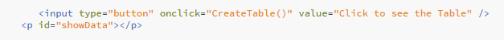

Tutorial 5: JSON HTML
Published on
JSON can be used to develop the HTML pages by transforming it to an HTML. Also, it helps in making tables, drop dawn contents and could have a list of drop dawn selection. Some methods are useful to make all that actions such as stringify () and XMLHttpRequest (). I had decided to create the table that has content of the advantages and disadvantages of using JSON. By clicking on the button the table will be obvious to see. Content written as JSON in array that is transforming into a JavaScript array. It will have the method XMLHttpRequest() to call the text file.
All technologies has something good at and bad at, also JSON has all that. Although the advantages are more than disadvantages, the user should be aware of threats when using JSON server. Furthermore, if a developer uses untrusted service, it could be a bit risky. While using Schema should have a device that is on the trusted network.
This is a JSON Editor Online page, it is free and allows developers to type codes and edit it.
CODE EXAMPLE OF CREATING A TABLE:
HTML
JSON

Script

Output
This is a JSON Editor Online page, it is free and allows developers to type codes and edit it.
Video of getting Data from JSON file into HTML.
I used the video from YuoTube
Pagination
JSON Tutorials